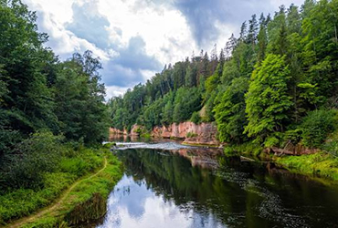
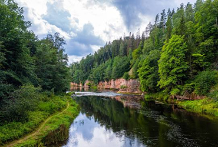
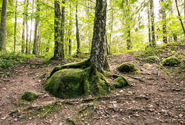
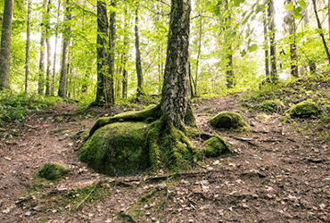
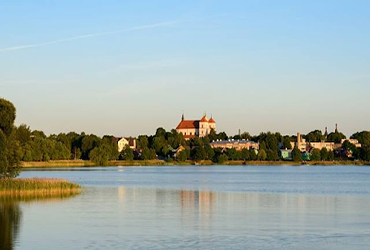
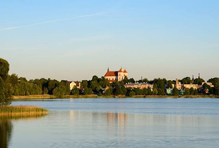
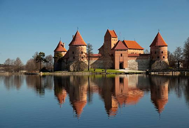
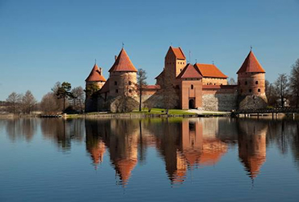

Jägala juga on juga Jägala jõe alamjooksul Harju maakonnas. Joa kõrgus on 7,8 või 8,1 meetrit ja laius üle 50 meetri. See teeb Jägala joast Eesti kõige kõrgeima loodusliku joa. Juga hiilgab oma iluga just kevadisel suurvee ajal ja talvel, kui jäätunud juga moodustab ühtse terviku. Vanasti kutsutud kui Joarüngas, Jägala joa juurest pärinevad esimesed kirjalikud teated vesiveskist Eestis (13. sajandi algus). Kes tahab ka lisaks joa vaatamisele ka midagi muud teha, siis on nad õnnega koos. Jägala jõe alamjooksul leiduvad kalanduslikult ühed suurimad forelli- ja lõhevarud. Jägala juga on looduskaitse all alates aastast 1959.
Kiipsaare tuletorn on endine navigatsioonimärk Saaremaa läänerannikul. Betoonist tehtud tuletorn on valmistatud aastal 1933 ning on 26 meetri kõrgune. Kui algselt ehitati see 100-150 meetri kaugsele rannast, siis tänasel päeval paikneb rannajoone muutumise tõttu torn meres. Tugevate tormituulte ja lainete mõjul vajus järsul rannikul asuv tuletorn aastaid tagasi viltu. Seetõttu sai majakas omale hüüdnimeks Saaremaa Pisa Torn. Tuuleiilid ja lained lükkasid majaka hiljem jälle enamvähem sirgeks. Tegmist on ainulaadse objektiga Eestis.


Nigula looduskaitseala asub Pärnumaa lõunaosas ning on loodud, et kaitsta 6400 ha ala, mis hõlmab endas puutumatuid soid, metsi ning niite. Siin kasvab palju jõhvikaid, mis on ka Nigula sümboliks. Looduskaitseala südameks on Nigula raba oma viie põlismetsaga kaetud rabasaare ning suure rabajärvega. Nigula rabas on 6,8 km pikkune looduse õpperada, mis annab inimestele terveks päevaks tegevust. Rajale jääb ka vaatetorn ja rada viib Nigula soostiku kõige suurema rabasaareni – Salupeaksini. Nigula soostik pakub midagi igale loodussõbrale.
Rohkem infot saab siit
Küku kaljud on Läti kõige suurim paljand. Nende kõrgus on 43 meetrit ja ülemine osa on moodustanud savi kihtidest, mis sisaldavad palju surnud organismide fossiile. Kalju keskel on koobas Küku, kuhu pääseb ainult mõõna ajal. Koopa pikkus on 19-22 meetrit. Vanasti kutsusid inimesed Küku kaljusid kärestikude tõttu Straujo kiviks. Talviti moodustavad külmad ilmad ilusad jäätunud joad ning katavad ära koopasse sissepääsu.

 

text
Pokaiņi mets on haruldaselt maaliline koht ja muistne pühapaik, mis on kuulus oma imeliste lugude poolest. Metsamassiivis leiduvates gruppides, kuhjades, kiviojakestes ja vallikestes asuvad Pokaiņi metsa kivikuhjad. Need on peamiseks põhjuseks, miks Pokaiņi metsa on kasvanud haruldasi oletusi ja erinevaid eeldusi. Inimesed arvavad, et kividel on erilised jõud ning metsa peetakse ühede poolt ravimise paigaks, teise poolt vanaks paganlikuks pühapaigaks. Esimese puhul inimesed käivad metsas, et saada muredest lahti ja energiat. Teise puhul arvatakse, et mets on nõiutud või isegi uks paralleelsesse maailma ning okste ja kivide koju viimine on eluohtlik
 


Rohkem infot saab siit
Bebrusai on järv Leedus Molėtai rajoonis. Järve kaldad on enamasti madalad ja soostunud, ent idakallas on kõrge (20-25 m). Järve kallastel asuvad mitmed metsad. Järves on kaks saart pindaladega 0,3 ja 0,18 ha. Väljavooluks on Bebrusai jõgi. Järve nimi on tuleneb tüvest bebras, mis tähendab kobrast.

Galvė järv on järv Leedus Trakai linnas. Sellel on 21 saart ja ühel neist asub järve suurim vaatamisväärsus - Trakai saare loss. Teisel aga on Leedu suurvürsti poolt tema naisele ehitatud õigeusu kiriku varemed. Galve järve nimi tuleb kas sõnast galva, mis tähendab pead (vähemalt üks inimene aastas upub järves) või sõnast galvis, mis tähendab järve sügavust. Legendi kohaselt nõuab Galve järv iga aastaselt inimohverdust, kuni keegi pole seal uppunud. Kui järv nõudis inimpead, siis Inimesed proovisid aga järve petta, andes “ohverduseks“ kivist tehtud inimpea.

 

Trakai loss ehitati valmis 15. sajandi algul Leedu suurvürsti käsul. Trakai loss on kõige suurem vanaaegne säilinud loss Leedus. Loss oli algselt ehitatud sõjalisel eesmärgil, aga kaotas peagi sõjalise tähtsuse ja kasutati hiljem hoopis vanglana. 17. sajandil sõjas moskoviitite vastu sai loss suuri kahjustusi ja 20. sajandil hakati lossi restaureerima. Tänasel päeval asub seal Trakai ajaloo muuseum.

 

Rohkem infot saab siit